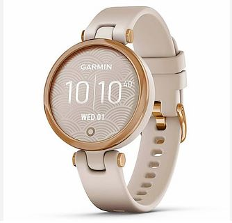
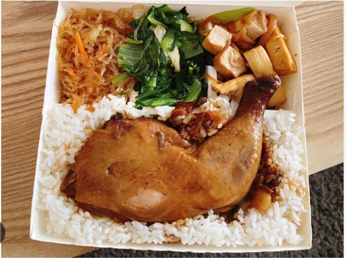

終結極端貧窮:台灣在地團體與政府合作實際行動——弱勢長者關懷
現況
在台灣有許多弱勢長者處在惡劣的生活環境中，長期處在惡劣環境中不僅會影響這些長者的生活品質，甚至還會影響他們的健康狀況。
實施
為了解決弱勢長者長期處在惡劣環境的問題，台灣在地組織銀色大門與華碩和政府合作，推出一連串的終結極端貧窮計畫。以下為銀色大門與華碩和政府合作的幾項計畫內容：

發送智慧型手錶
智慧型手錶可以隨時監測弱勢長者的身體狀況，以提供更好的協助。

固定送餐
讓弱勢長者可以好好吃飯，不讓貧窮影響自身的健康。
教導弱勢長者如何使用智慧型手錶
讓智慧型手錶的發放可以更有效率地去監測弱勢長者的健康。
達成目標
這些計畫實行有達到一些改善貧窮的成果：
減少飢餓:固定為弱勢長者配送三餐可以讓弱勢長者不至於為飢餓所困擾。
提升健康狀況：使用智慧型手表監測弱勢長者的健康狀況可以讓他們在身體出問題時能得到即時的治療，不讓延誤就醫造成生理上的痛苦。
降低致死率：監測長者的弱勢長者的健康狀況可以讓弱勢長者在身體有問題時得到及時治療，這可以讓長者減少沒去就醫致死的情況，以降低致死率。